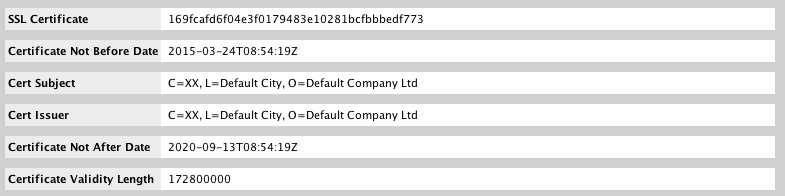
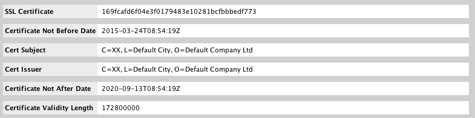

Hunting Threat Actors with TLS Certificates
Using open source data to defend networks
Introduction
Who am I
Mark Parsons
- Previous life:
- Incident responder
- Network defender
- Occasional threat analyst
- Now
- dev ops /intel for King & Union
- I like to write in python and sometimes go
Who am I not
Animator - Archer
One Direction Fan Fiction???
Traditional methods of hunting / pivoting using network related resources
Passive DNS
Historical mappings of domains to IP addresses and vice versa
Sources of PDNS
Whois tracking
Using domain registrant information to look for other potentially related domains
Sources of trackable whois information
What else could we do that provides pivotable/trackable data
That's right TLS certificates!!!
Quick Caveat
Code signing certificate != TLS certificate
Code signing
TLS certificate

TLS Hunting Basics
Tips to help you get started
Where to start
- IP to certifcate
- Certificate to IP
IP to cert example
What certificates have been seen on 185.12.44.51
This will be covered later in the slides
Certificate to IP example
What IP addresses is a1833c32d5f61d6ef9d1bb0133585112069d770e currently seen on
This will be covered later in the slides
What to consider
- Look at the time frame the certificate was seen on an IP
- Was a certificate seen during malicious activity?
- Do you have malware/implant using TLS?
- How many other hosts are seen using that TLS certificate?
- Expiration dates on certificate
- Issuer
- Self Signed
- Free certificate
- Paid certificate
Network Defense
What you can do to defend your networks
IDS Monitoring - TLS fingerprints
- Suricata
- Bro
- Snort 3 - external package needed
Automate tracking of TLS certs
- PassiveTotal Monitoring
- Censys.io API script
- Your own local sonar or censys.io repo
- Combo of all of these
- Put new ip addresses found into monitoring/blocks as needed
More Network defense
More Like Network Hygiene
Most of these you will have to do with your own sonar scan data or censys.io data
Look at your netblocks
- Use your ASN for a censys.io search
- Use your ASN or subnets if sonar data in elasticsearch
What to look for
- Your security appliances
- Remote access management
- HP integrated Lights Out
- Dell Remote Access Card
- Websites or services you didn't know about
Look outside your netblocks
- Look for ceritifcates for your org not inside your netblocks
- Look for certificates that have email addresses from your org
- Look for certificates who have your org as a Subject Alt Name
- Look for dopplegangers of your org
- Take a look at PassiveTotal keyword searching (DNS, Whois, TLS ) aka brand monitoring
So TLS certificates you say?
Where do you start?
First you need some data

You could ingest scans.io sonar SSL scans
Checkout my Python Scansio-Sonar-ES github repo
Or my Golang Sonar-ES-GO github repo
Or use censys.io
Or use PassiveTotal
Scans.io Sonar SSL scans
Scans performed by Rapid7
- Raw data going back to 10/30/2013
- Easily consumable
- Updated weekly
- Incremental in nature
- certs.gz - Only new sha1s and base64 raw certificate seen that week
- hosts.gz - SHA1 and host for all hosts seen
- No public search interface
- Is weekly frequent enough ?
Censys.io
Maintained by the University of Michigan and University of Illinois Urbana-Champaign
- Easy to use search interface
- API Access
- Frequent Updates
- All or nothing in nature
- If there is a delta between scans old scan data is not in main search interface
- Old scan data is available in json format
PassiveTotal
- Should be the first place any analyst goes when performing any infrastructure hunting
- Merge traditional hunting with new methods
- Aggregates multiple passive DNS sources
- Provides WHOIS data
- Provides references to OpenSource reporting
- Also has TLS certificates
- So much more I am only touching the surface
If you aren't you using it
You really should try it out
You won't regret it
Disclamer: PassiveTotal provided me researcher access for data required for this presentation
Some basic examples using PassiveTotal, Censys.io or a local sonar datastore
What certificates have been seen on 185.12.44.51
Source: PassiveTotal
Where is a1833c32d5f61d6ef9d1bb0133585112069d770e currently seen
Source: Censys.io
Self Signed Certificates in an ASN with Amazon in the name
Source: Censys.io
Certificates signed by Wosign that have Microsoft in the subject
Source: My sonar es instance
Now that you have seen some very basic examples
Let's do some TLS hunting/pivoting
CVE-2014-1761
Remote Code Execution - Word RTF Memory Corruption Vulnerability
Awesome technet article that provided the following:
Yara Sigs!
TLS SHA1 Hash
Command and Control IP
Potential Command and Control Domain
Starting point
Let's do some traditional pivots
Passive DNS records that were active around time of Microsoft report
Whois on domain provided
Repeat two steps above on any new info found
Now let's pivot on the TLS SHA1
SHA1: df7240fb9bcd5312eba5f9c2dde7a29a1dc8f355
Timeline
Success!!!!
Go from one TLS Cert, one IP, and one Domain
Get 6 IPs and Three Domains using same registration info
Palo Alto - Lotus Blossom
Great write up on targeting of Hong Kong, Taiwan, Vietnam, the Philippines, and Indonesia and the use of the Elise trojan
Provided csv of iocs on github
IP iocs
TLS Pivot
Hmmm several ip's all using the same TLS cert
Could there be more?
Yup! there is more - lots more
311 more as of 8/15/2016
Certificate Issuer: Eric-Office
Certificate Subject: Eric-Office
Validity Dates: 2012-02-13 - 2022-02-10
Sonar dates
First seen 2013-10-30
Last seen 2016-08-15
Still very active today
APT 28/Sofacy - X Tunnel
Initial IOC
Passive DNS pivot
TLS Certificate pivot on initial IP addresses
Certificate #1
Certificate #2
Pivot on certificate #2
Crowd Strike DNC Report
Timeline
An overall picture of how long this certificate has been seen by IP
Initial report 2 domains, 2 IPs, 1 TLS Cert
Tradtional pivots reveal 5 interesting domains
Now have 24 IPs, 7 domains, 3 TLS certs
Additional linkages via open source reporting
Additional linkages via open source reporting
If you aren't monitoring for this certificate
a1833c32d5f61d6ef9d1bb0133585112069d770e
You probably should :)
PWC Poland Red Team
Inital indicators were several malicious hashes that were shared with me
What piqued my interest was the malware in a few cases was attempting to use DNS to tunnel once running
Passive DNS Pivot on C2 domain
Passive DNS pivot on new IP addresses
SSL pivot on IP addresses
Three ssl certificates to look at
Certifcate #1
Certifcate #2
Certifcate #3

Pivot on the newly discovered TLS certificates
What did we find
- Three new IP addresses
- Cert #1 was seen on all five of the original IPs
- It was also seen on one new IP
- Cert #2 was seen on four of the five original IPs
- It was also seen on the same new cert as #1 and two addtional IPs
- Cert #3 was the same four of the five original IPs as #2
- It was also seen on the same new cert as #1 and the two addtional IPs as #2
We could have found all of this infrastucture with out doing the certificate pivoting
Multiple passive dns pivots would have eventually gotten us to this point
The certificate pivoting helped connect the dots in the relations of all the infrastructure
Thank You
To the PWC Poland red team for being good sports and allowing me to mention their infrastructure in this talk
PoSeidon - Point of Sale
Initial IOCs
Passive DNS on domains
Pivot on TLS certificates found on IPs
Yeah hard to read and lots of addtional IP addresses
Three ssl certificates with decent clusters
Lets take a look at the details of the certificates
Lets take a look at the details of the certificates
 

Lets zoom in on the three clusters of ssl certificates
Start with 18 domains, 6 ip addresses
Basic pdns pivot adds 29 new ip addresses
3 new TLS certificates
51 new ip addresses using those TLS certificates
Much more to dig into
More pivots to be done but I will leave this as an exercise for you to try
Summary
- Add SSL cert pivoting to your network infrastructure pivots for addtional data sources
- Add SSL certificates to network defenses where appropriate
- Use opensource data to find SSL certificates for your enivornment that you might be unaware of
- Happy Pivoting!